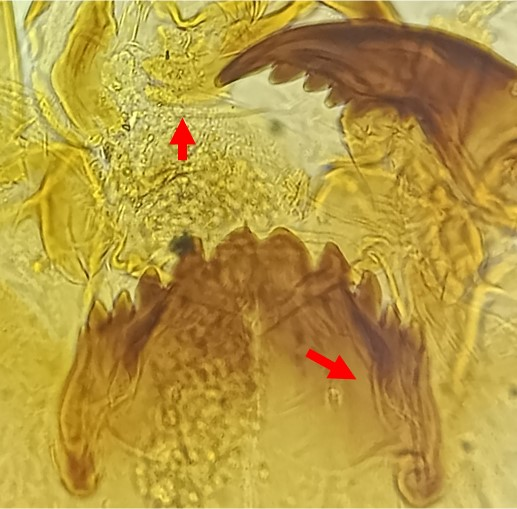
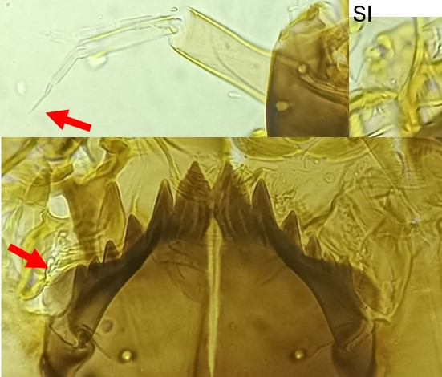
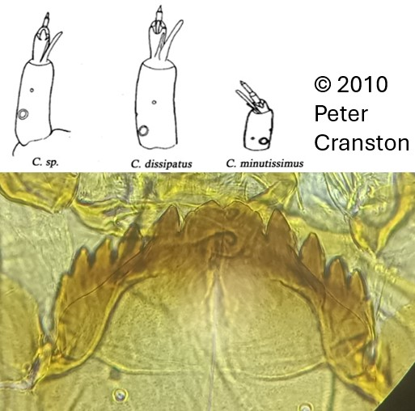

Sous famille des Orthocladiinae
Plaques larges, deux dents centrales, 5 paires de dents latérales



Plaques ventromentales « doubles » et s’étendant bien au-delà de la base du mentum
Prémandibules avec des dents distinctes (2-6)
Antenne à 7 segments (le 7ème très fin, vestigial). La lame antennaire (Chète) est nettement plus
grande que le segment basal. Plaques ventromentales grandes et dépassent largement du
mentum
Plaques ventromentales simples dépassant latéralement du mentum. Prémandibules indistinctes
Antenne à 5 segments. La lame antennaire (chète) est de même taille que le segment basal.
Plaques ventromentales ne dépassent pas (ou très peu) du mentum. Prémandibules indistinctes